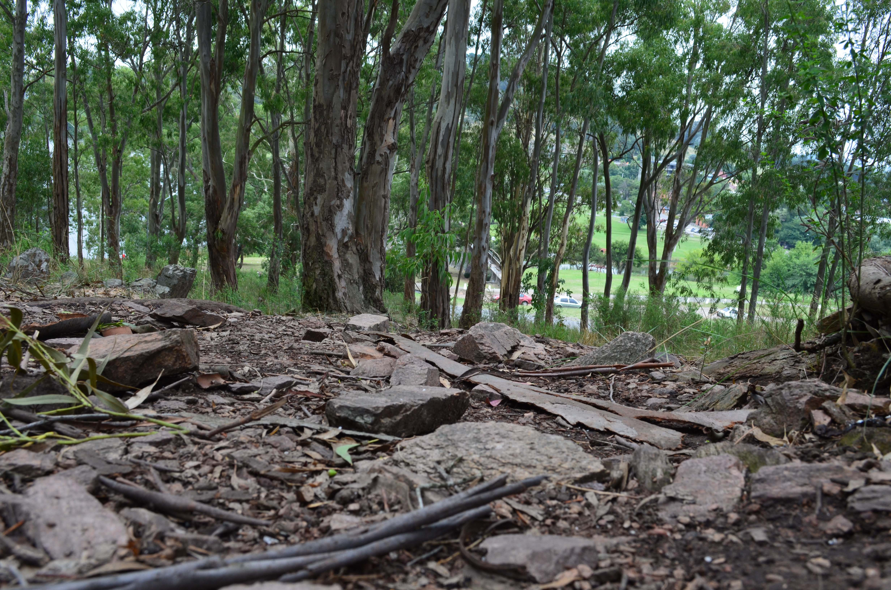
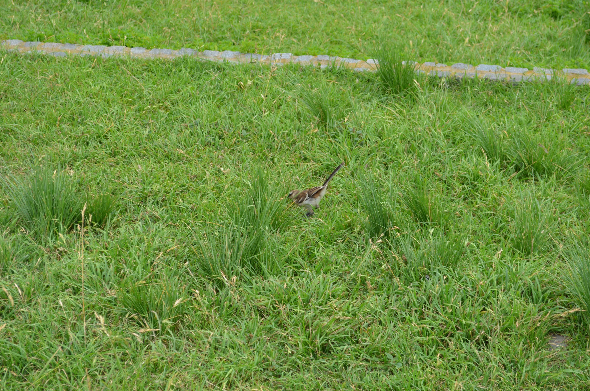

Inicio
Bienvenidos a TREEECO
Somos una Empresa especializada en generar soluciones Ambientales/Sociales para fomentar una cultura sustentable. Con el propósito de lograr un posicionamiento e impacto en todo América Latina y el Caribe en cuestiones de pequeña, mediana y gran escala. Siendo siempre nuestra prioridad los micro, pequeños y medianos productores a nivel productivo. Los jovenes a nivel cultural.